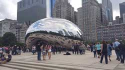
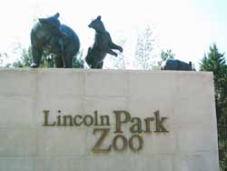
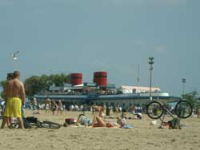

Parks
Millenium Park
Chicago has a lot of historical public parks that offers everyone can go to relax and enjoy it. Mainly Millennium park and Grant park are in the loop area of the city. There are a lot of great events takes place in these areas every year, such as Lollapalooza and different concerts, Chicago marathon and Taste of Chicago. The Chicago Bean is in Millennium park and the Buckingham Fountain is located in Grant park.
Grant Park and the Buckingham Fountain
Buckingham Fountain is a Chicago landmark in the center of Grant Park. It is one of the largest fountains in the world. It is considered as Chicago's front door. The fountain operates daily 8:00 a.m. to 11:00 p.m. from mid-April through mid-October. Water shows occur every hour on-the-hour and last 20 minutes. The last show begins at 10:00 p.m. nightly.
Lincoln Park Zoo
Lincoln park zoo is also another main park located on the northeast side of Chicago. The park has a lot of animal species including lions, polar bears, gorillas, monkeys and reptiles. It is one of the oldest zoo in North America.
North Ave. Beach
There is also North avenue beach close to the park so that your joy will be unlimited.In August 2016, in a partnership with the City of Chicago, the Chicago Parks District and Everywhere Wireless, the Buckingham Fountain viewing area joined many Chicago beaches and the Museum Campus in providing free Wi-Fi to visitors.